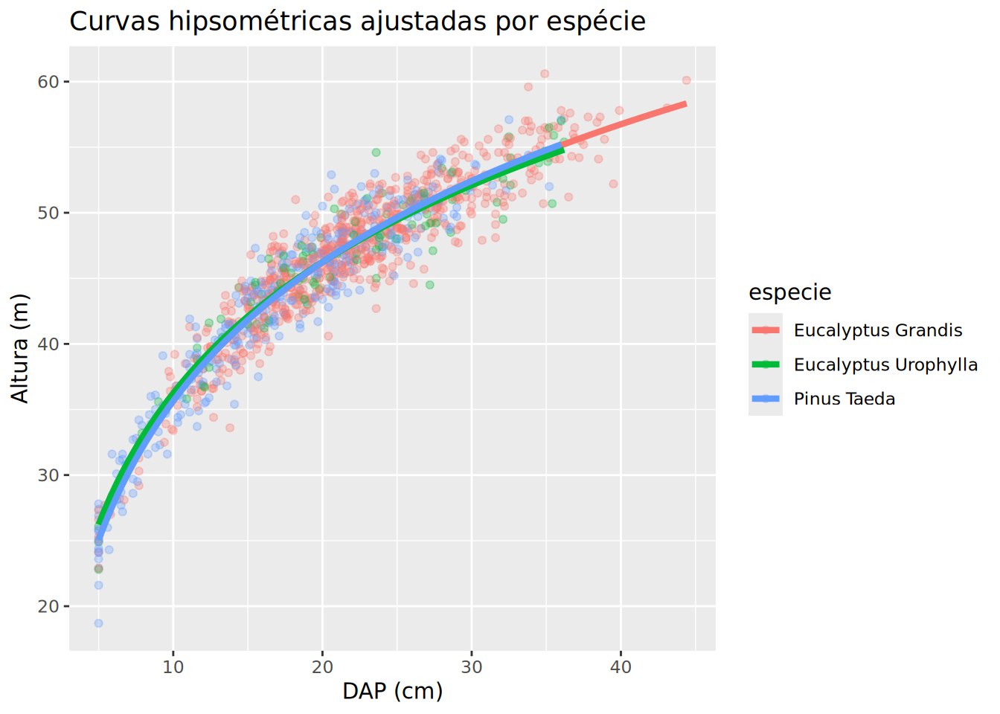

# SEM função: copiar e colar para cada parcela (ruim!)
# volume_p1 <- sum(inv_florestal$volume[inv_florestal$parcela == 1])
# volume_p2 <- sum(inv_florestal$volume[inv_florestal$parcela == 2])
# ... repetir 30 vezes
# COM função: escreva uma vez, reutilize sempre
volume_parcela <- function(dados, num_parcela) {
dados %>%
filter(parcela == num_parcela) %>%
summarise(volume_total = sum(volume))
}Dia 4 — Manhã
Dia 4 — Manhã | 4 horas
Objetivos
- Escrever funções próprias para automatizar tarefas repetitivas
- Usar
purrr::map()para aplicar funções a múltiplos elementos - Aninhar dados e ajustar modelos por grupo
Por que criar funções?
Se você copiou e colou um código mais de 3 vezes, transforme em função. O princípio DRY (Don’t Repeat Yourself) evita erros e torna seu código reutilizável.
Anatomia de uma função
Exemplos aplicados
[1] 0.04908739[1] 0.01767146 0.03141593 0.04908739 0.07068583[1] 0.7363108[1] 0.6626797[1] "Bom"[1] "Médio"[1] "Ruim"Iteração com purrr
O pacote purrr oferece uma família de funções map() para aplicar uma função a cada elemento de um vetor ou lista — sem loops explícitos.
map() — a base de tudo
Tipos de saída
# A tibble: 5 × 2
dap ab
<dbl> <dbl>
1 21.7 0.0370
2 20.5 0.0330
3 26.2 0.0539
4 12.6 0.0125
5 19.5 0.0299map_dfr() — empilhar resultados
# Calcular estatísticas por parcela e empilhar
parcelas <- unique(inv_florestal$parcela)
resultados <- map_dfr(parcelas, function(p) {
inv_florestal %>%
filter(parcela == p) %>%
summarise(
parcela = p,
dap_medio = mean(dap),
altura_media = mean(altura),
volume_total = sum(volume)
)
})
head(resultados, 5)# A tibble: 5 × 4
parcela dap_medio altura_media volume_total
<dbl> <dbl> <dbl> <dbl>
1 1 20.7 46.1 36.7
2 2 20.6 45.7 40.1
3 3 19.5 44.7 37.3
4 4 20.5 45.7 39.1
5 5 22.0 46.8 43.0Aninhamento: modelos por grupo
Uma das técnicas mais poderosas do purrr: aninhar dados por grupo e aplicar modelos a cada grupo.
# A tibble: 3 × 2
# Groups: especie [3]
especie r2
<chr> <dbl>
1 Eucalyptus Grandis 0.889
2 Pinus Taeda 0.928
3 Eucalyptus Urophylla 0.906# A tibble: 6 × 6
# Groups: especie [3]
especie term estimate std.error statistic p.value
<chr> <chr> <dbl> <dbl> <dbl> <dbl>
1 Eucalyptus Grandis (Intercept) 0.654 0.632 1.04 3.01e- 1
2 Eucalyptus Grandis log(dap) 15.2 0.206 73.6 0
3 Pinus Taeda (Intercept) 0.484 0.641 0.754 4.51e- 1
4 Pinus Taeda log(dap) 15.3 0.228 67.0 4.91e-201
5 Eucalyptus Urophylla (Intercept) 2.99 1.44 2.08 4.01e- 2
6 Eucalyptus Urophylla log(dap) 14.4 0.473 30.5 1.58e- 51
walk() — Efeitos colaterais
walk() é como map(), mas não retorna resultado — ideal para salvar arquivos:
# Gerar e salvar um gráfico por parcela
inv_florestal %>%
group_by(parcela) %>%
group_walk(~ {
p <- ggplot(.x, aes(x = dap, y = altura)) +
geom_point() + geom_smooth(method = "lm", formula = y ~ log(x), se = FALSE) +
labs(title = paste("Parcela", .y$parcela))
ggsave(paste0("parcela_", .y$parcela, ".png"), p, width = 6, height = 4)
})Exercícios
Exercício 1
Escreva uma função cv(x) que calcula o coeficiente de variação (sd(x) / mean(x) * 100). Teste com c(15, 20, 25, 30, 35).
Resultado esperado:
[1] 31.62278Exercício 2
Escreva uma função resumo_parcela(dados, num_parcela) que retorna n° de árvores, DAP médio e volume total da parcela. Teste com a parcela 1.
Resultado esperado:
# A tibble: 1 × 3
n dap_medio volume_total
<int> <dbl> <dbl>
1 33 20.3 17.2Exercício 3
Use map_dbl() para aplicar a função volume() a um vetor de DAPs c(10, 15, 20, 25, 30) com altura fixa de 25 m.
Resultado esperado:
[1] 0.098 0.221 0.393 0.614 0.884Exercício 4
Aninhe os dados por parcela e ajuste lm(altura ~ log(dap)) para cada parcela. Qual parcela tem o maior R²?
Resultado esperado:
# A tibble: 30 × 2
parcela r2
<int> <dbl>
1 7 0.892
2 12 0.881
3 15 0.876
...Exercício 5
Gere e salve um histograma do DAP para cada espécie usando group_walk().